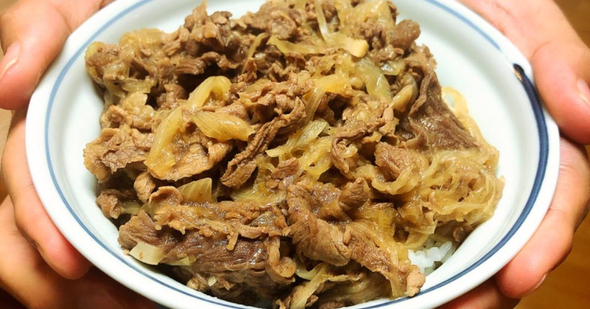

Beef Bowl

A typical Japanese dish of cooked thinly sliced beef seasoned in a savory sauce.
This typical beef bowl dish, known as "gyudon" in Japanese, is made up of thinly sliced beef cooked in a sauce called "tare". This sauce can be store bought or homemade from scratch using simple ingredients. It's a typical favorite dish with many people enjoying it from restaurants that serve it in a timely manner such as "Sukiya" or "Yoshinoya".
Ingredients
- tare
- thinly sliced beef cuts
- a medium onion
- chopped garlic
- rice
- desired toppings such as benishoga, kimchi, raw egg, cheese, and/or green onions
Directions
- Set the rice to cook in the rice cooker according to your machine's instructions.
- Thinly slice the onion in mooon shape. Add oil to the pan and sautee the onions with the chopped garlic.
- Once the onions become transluscent, add the beef and cook until light brown or all meat has changed color.
- Add the tare and continue to simmer the meat.
- Once the meat has cooked, serve the bowl with rice and top the meat over the rice. Make sure the meat does not overcook or it will become tough.
- Add desired toppings. Japanese people often like to top gyudon with a raw egg and chopped small green onions.